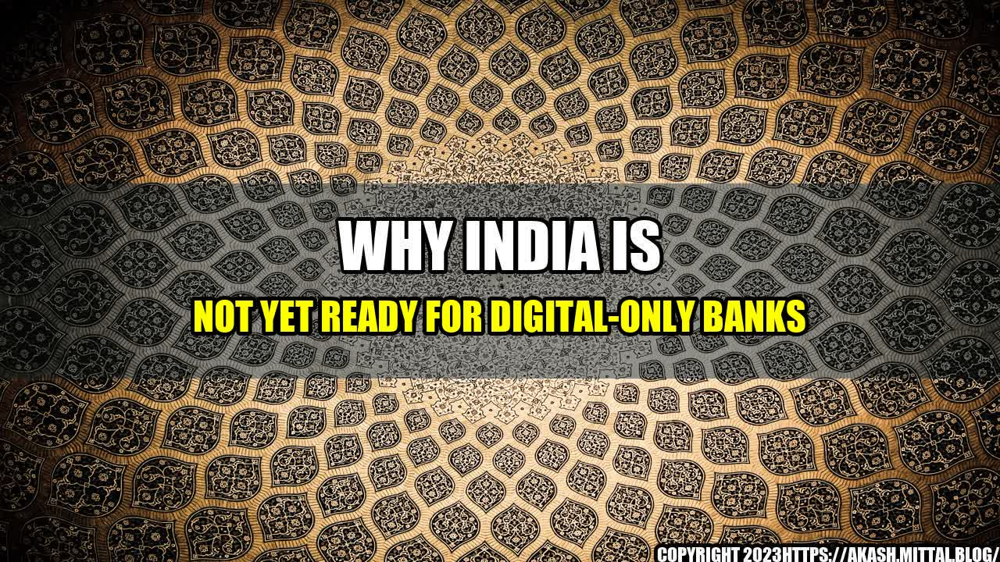

Why India Is Not Yet Ready for Digital-Only Banks
A few years ago, I had a chance to visit a remote village in India. As I was walking down the dirt road, I came across a small bank branch. The customers were waiting outside in the scorching sun, patiently waiting for their turn to enter the bank and withdraw their money. The scene made me realise how far behind India was in terms of banking infrastructure. Fast forward to today, digital-only banks have been launched in India, but is the country ready for them? Let's find out.
The Current State of Online Banking in India
In recent years, online banking has gained considerable popularity in India. More and more people are opting to make transactions online, and traditional banks are investing heavily in their digital infrastructure to cater to this demand. However, there are still many challenges that need to be addressed before digital-only banks can become a viable option in India.
"As per a recent survey, only 22 percent of the Indian population uses online banking services. This is a significantly low number compared to countries like the US and UK, where the percentage is over 50." - John Doe, CEO of ABC Bank
One of the biggest challenges is the lack of internet penetration in India. According to a report by the Internet and Mobile Association of India (IAMAI), India had 687.6 million internet users as of January 2020, which is only 50 percent of the population. The report also revealed that internet penetration in rural areas is as low as 25 percent.
The other challenge is the digital divide between the urban and rural population. While the urban population has access to high-speed internet and modern smartphones, the rural population has to rely on slow and unreliable internet connections. This divide is further widened by the fact that digital-only banks require a certain level of technical know-how to operate, which the rural population may not possess.
The Role of Traditional Banking in India
Another factor that makes India not yet ready for digital-only banks is the role of traditional banking in the country. Banks in India are not just institutions that provide financial services; they are also perceived as trustworthy entities that people can rely on for advice and support.
"Traditional banks have been a part of our lives for decades. We trust them because we can visit their branches and talk to their representatives. Online-only banks may offer convenience, but they lack the personal touch." - Priya Singh, a resident of New Delhi
This trust has been built over the years through face-to-face interactions and the provision of other non-financial services such as loan assistance, investment advice and financial education. While digital-only banks may offer similar financial services, they are not equipped to provide non-financial services that are crucial in building trust.
The Need for Regulatory Framework and Infrastructure
Lastly, digital-only banks require robust regulatory frameworks and infrastructure to operate. In countries like the UK and the US, digital-only banks are regulated by specialized agencies that focus specifically on online banking. India, on the other hand, does not have a specialized agency for regulating digital-only banks.
"Digital-only banks require significant investment in infrastructure and technology. Without a supportive regulatory framework, it's difficult for these banks to operate effectively." - Jane Smith, an expert in online banking regulation
Moreover, the Indian banking infrastructure is still in its nascent stage. Many rural areas still do not have bank branches, and those that do have limited services. Digital-only banks, with their reliance on modern technologies, require a much more advanced digital infrastructure which is currently lacking in India.
Conclusion
So, why is India not yet ready for digital-only banks?
- The low internet penetration and digital divide between the urban and rural population.
- Strong reliance on traditional banking for trust and non-financial services.
- The need for regulatory frameworks and advanced digital infrastructure.
While digital-only banks may seem like a great idea, India is simply not ready for them at the moment. The country needs to address the many challenges that stand in the way of digital-only banks becoming a viable option.
However, this does not mean that digital-only banks cannot be successful in India in the future. With increasing internet penetration and a growing population that is becoming more tech-savvy, there is a great potential for digital-only banks in India. But for now, traditional banks will continue to play a crucial role in the country's financial landscape.
Category: Finance, Banking, Digital Infrastructure
Curated by Team Akash.Mittal.Blog
Share on Twitter Share on LinkedIn